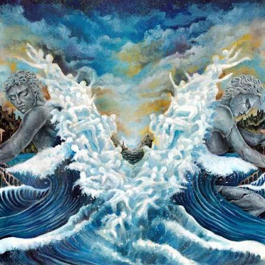
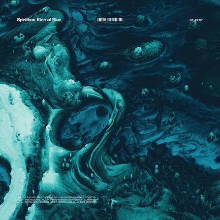
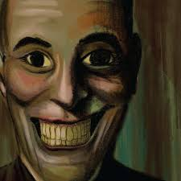

2025The Darkest Place i've Ever Been
LANDMVRKS
Metalcore Timeline
← Voltar para a página principalA cena atual mistura o peso do metalcore com elementos eletrônicos, pop e até R&B, criando um som mais experimental e difícil de encaixar em uma única categoria.

2025LANDMVRKS

2021Spiritbox

2024156/Silence